Lab 23: Microsoft Edge Security Baseline
Microsoft Intune · Endpoint Security · Microsoft Edge
Overview
This lab documents the deployment and validation of a Microsoft Edge security baseline for a controlled Windows pilot device group using Microsoft Intune Endpoint Security.
Objective
Deploy an Edge security baseline through Intune Endpoint Security, assign it to the Windows pilot device group, force device check-in on CL2, and validate that Edge policies are applied locally.
Environment
| Component | Value |
|---|---|
| Tenant | Nietz Ltd |
| Platform | Windows / Microsoft Edge |
| Policy | WIN-SEC-01-Edge-Security-Baseline |
| Pilot Device | CL2 - Chloe Bennett |
| Previous lab dependency | Lab 22 |
| Next lab dependency | Lab 24: Windows Update Ring Pilot |
Configuration
1. Review existing Microsoft Edge security baseline profiles
01 Edge baseline profiles before deployment The Microsoft Edge security baseline profiles page is reviewed before creating the new pilot baseline profile.
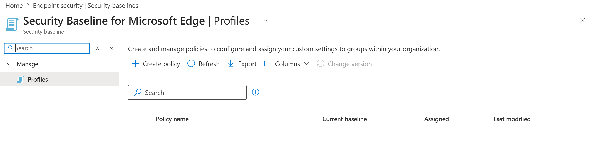
2. Configure the Edge security baseline profile details
02 Profile basics configured The profile is named WIN-SEC-01-Edge-Security-Baseline and documented as an Edge security baseline for Intune-managed pilot devices.
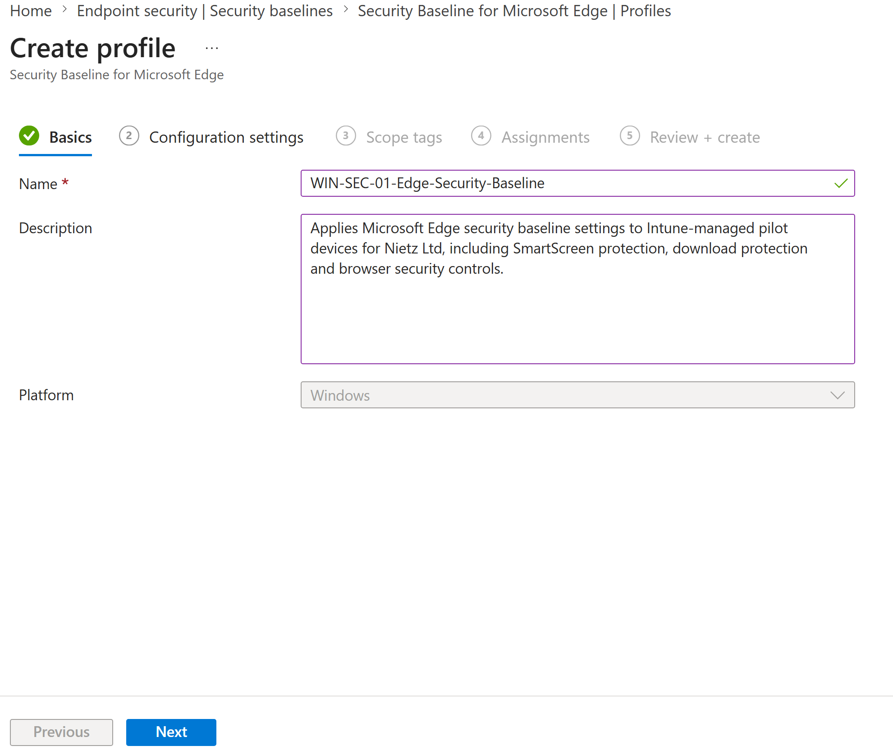
3. Configure browser hardening settings
03 Browser hardening settings configured IE mode reload options and HTTPS warning bypass are disabled, while dynamic code protection and Application Bound Encryption are enabled.
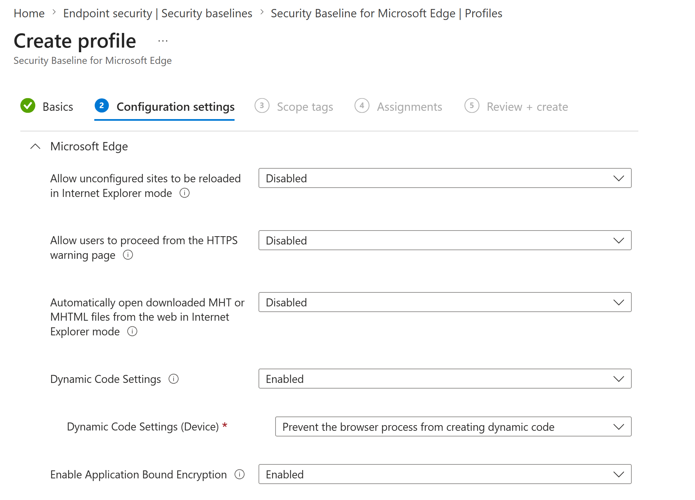
4. Configure additional browser isolation controls
04 Additional browser isolation controls Legacy extension point blocking and site isolation are enabled. SharedArrayBuffer unrestricted access and unsafe SwiftShader fallback are disabled.
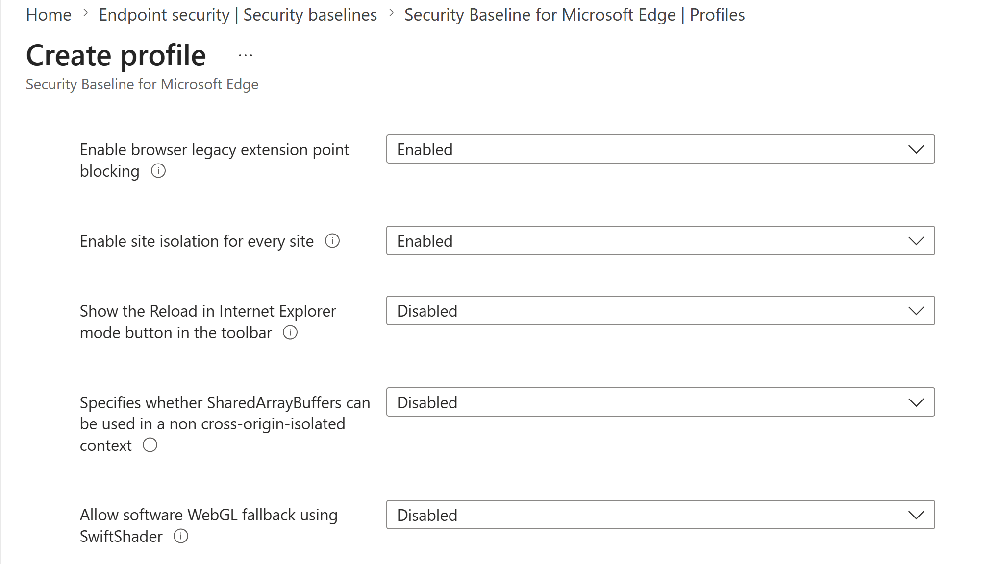
5. Block unmanaged browser extension installation
05 Extension installation blocklist configured The extension blocklist is enabled with the wildcard value, preventing unmanaged browser extensions from being installed on the pilot device.
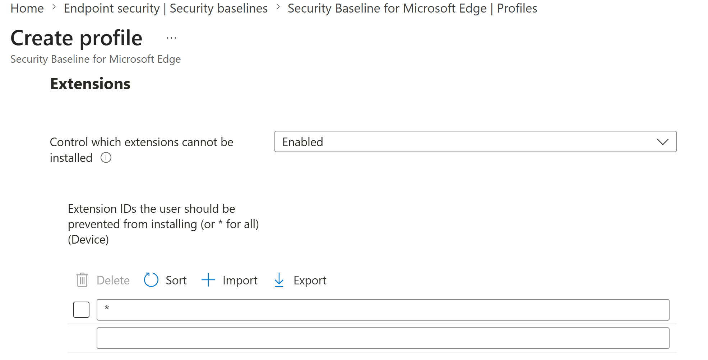
6. Configure HTTP authentication and native messaging controls
06 HTTP authentication and native messaging controls Basic authentication over HTTP is disabled, supported authentication schemes are restricted to NTLM and Negotiate, and user-level native messaging hosts are disabled.
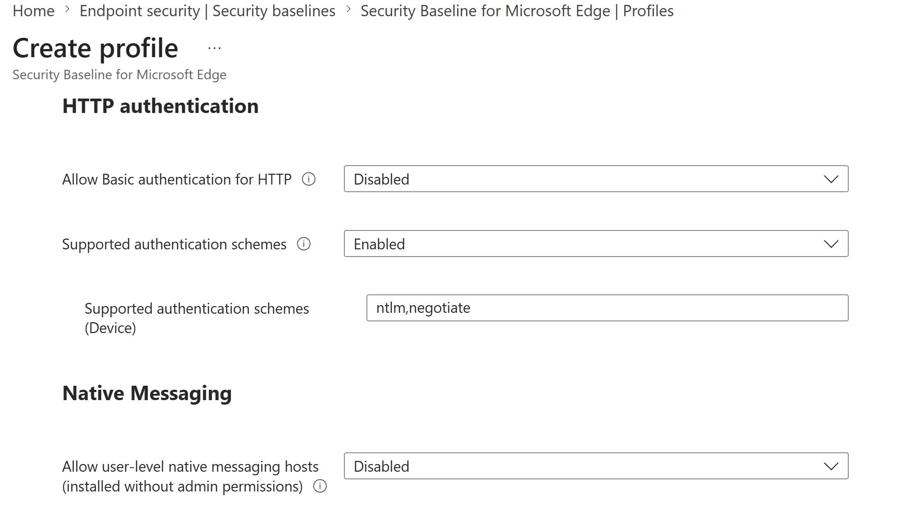
7. Enable SmartScreen and website typo protection
07 SmartScreen and typo protection enabled Microsoft Defender SmartScreen, potentially unwanted app blocking, SmartScreen bypass prevention, and Edge website typo protection are enabled.
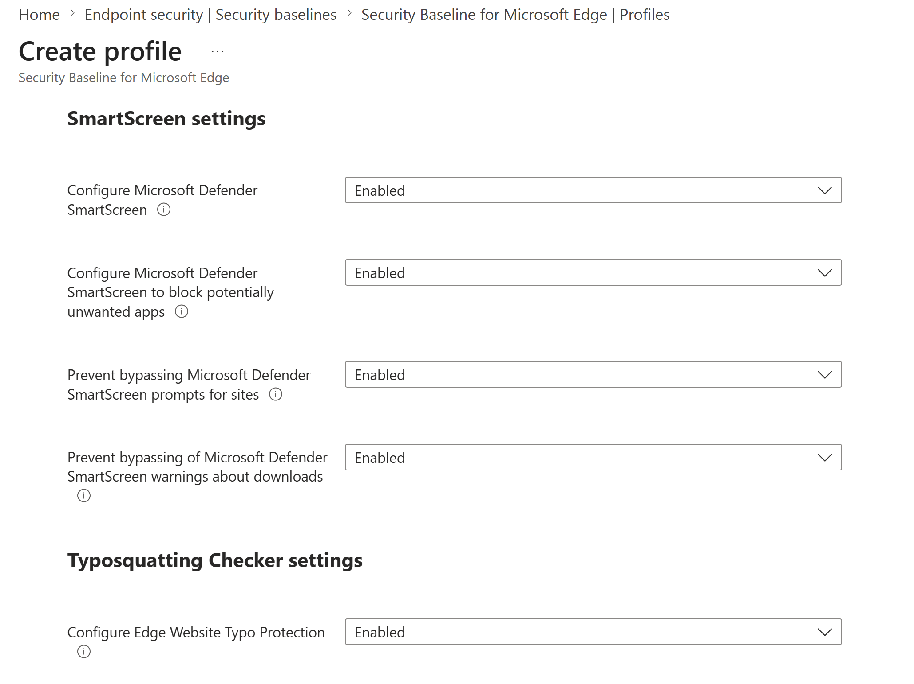
8. Assign the baseline to the Windows pilot device group
08 Assigned to the Windows pilot device group The baseline is assigned to GRP_Intune_Windows_Pilot_Devices, targeting the pilot device CL2 without excluded groups or filters.
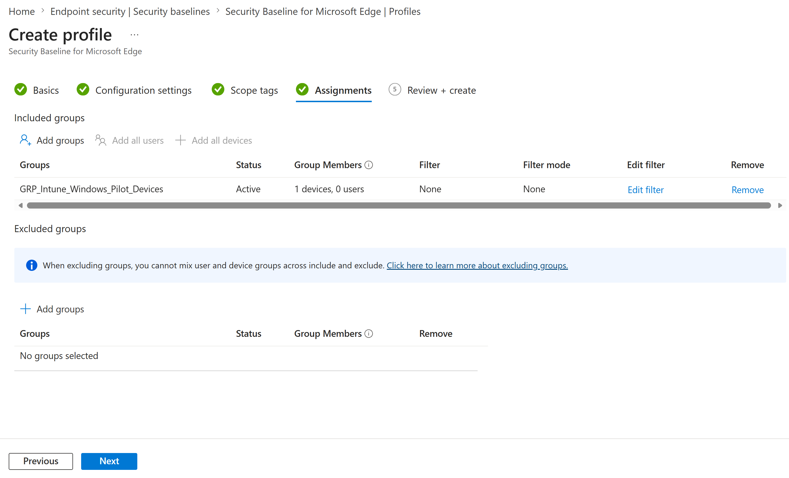
9. Review the baseline configuration before creation
09 Review and create summary The final review confirms the baseline name, platform, default scope tag, and assignment to the pilot Windows device group before creation.
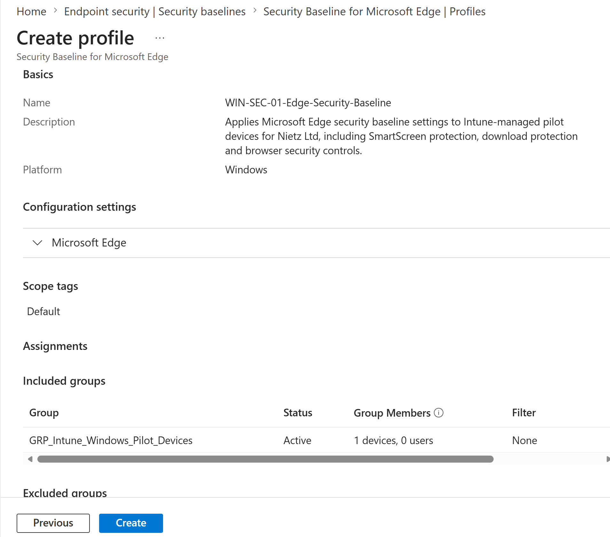
10. Confirm the baseline profile was created
10 Profile created in Endpoint Security The new baseline profile appears in the Microsoft Edge security baseline profile list with Version 139 and assignment enabled.
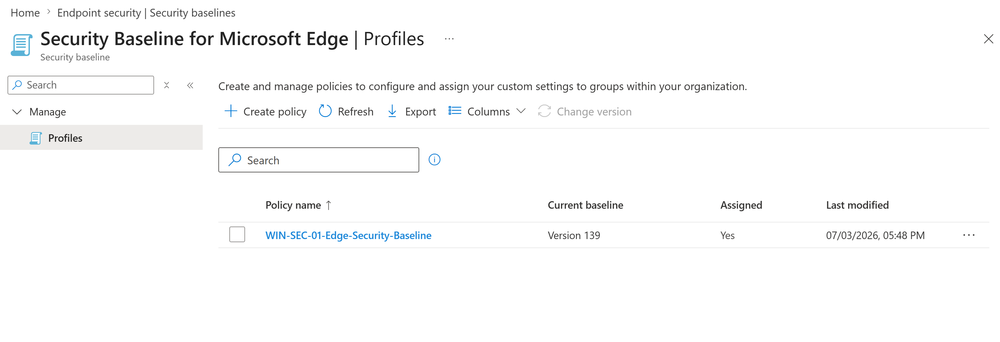
Validation
11. Sync the pilot device with Intune
11 CL2 manually synced after assignment CL2 is synced from Windows settings to request the latest Intune security policies and managed application settings.
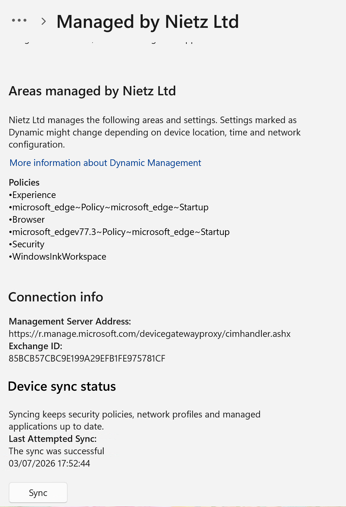
12. Verify Edge policies on the pilot device
12 Edge policies applied locally on CL2 The edge://policy page shows active Microsoft Edge policies applied at device level with mandatory status and OK results. The page includes the new security baseline policies and existing Edge startup policy from the earlier configuration lab.
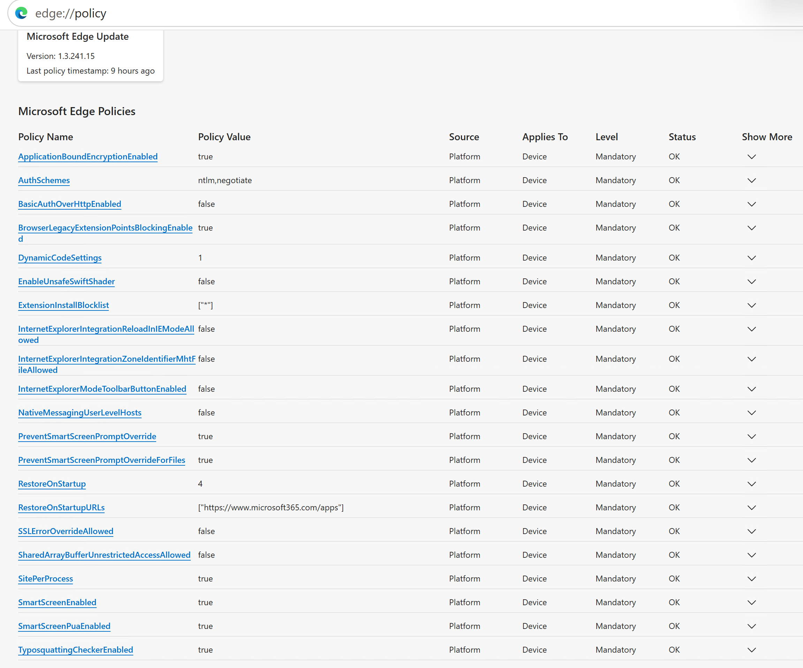
13. Validate that extension installation is blocked
13 Extension installation blocked by policy A Microsoft Power Automate extension installation attempt is blocked by administrator policy, validating the extension blocklist control.
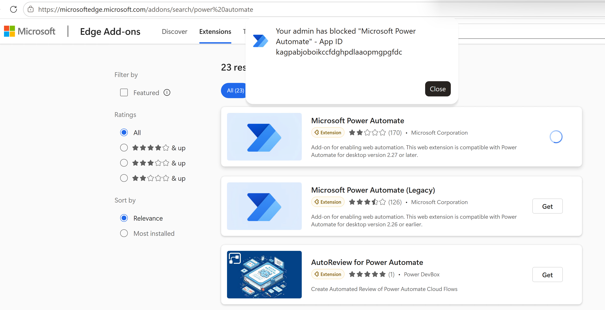
14. Confirm successful deployment in Intune reporting
14 Deployment succeeded for CL2 Intune reporting confirms the Edge security baseline checked in successfully on CL2 for Chloe Bennett, with one succeeded device and no errors or conflicts.
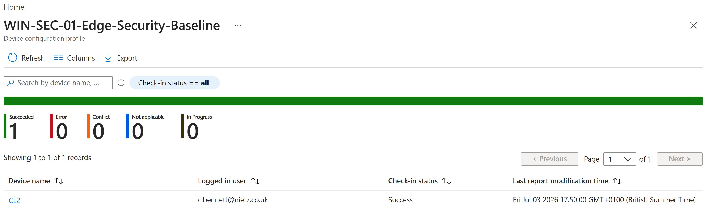
Key Technical Outcomes
- Created a Microsoft Edge security baseline profile in Endpoint Security.
- Assigned the profile to GRP_Intune_Windows_Pilot_Devices.
- Validated policy application on CL2 using Windows sync, Intune reporting, edge://policy, and a blocked extension test.
Summary
- Created a Microsoft Edge security baseline in Intune Endpoint Security.
- Assigned the baseline only to the Windows pilot device group.
- Validated local policy application on CL2 through Edge policy reporting.
- Confirmed successful deployment in Intune with no reported conflicts or errors.
- Verified active enforcement by testing a blocked browser extension installation.